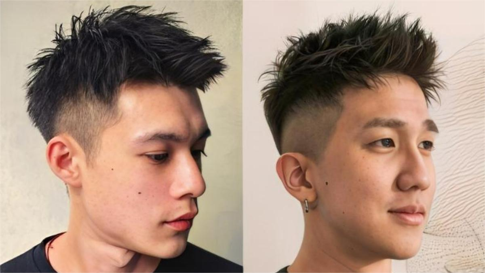
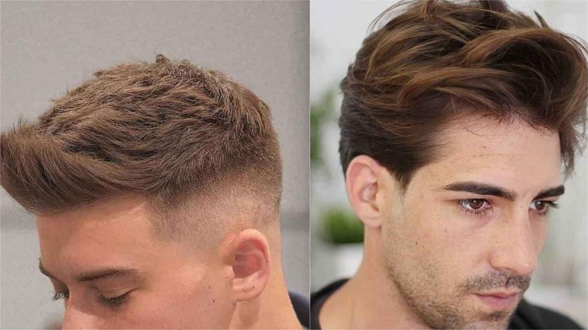
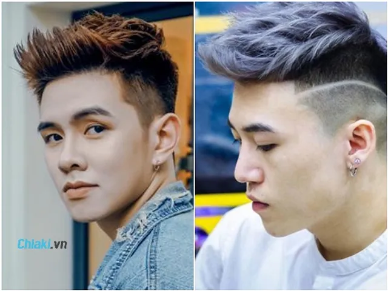
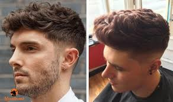

💨 Kiểu Tóc Quiff (Phồng Tự Nhiên & Cá Tính)
Quiff là kiểu tóc mang phong cách châu Âu, nổi bật với phần mái dài được vuốt ngược ra sau, tạo độ phồng tự nhiên nhưng vẫn gọn gàng. Đây là kiểu tóc vừa lịch sự, vừa mang nét phóng khoáng.
✨ Điểm đặc biệt: Quiff giúp tăng chiều cao khuôn mặt và phù hợp với
người có trán thấp hoặc khuôn mặt tròn.
🔥 Ưu điểm nổi bật
- Giúp khuôn mặt thanh thoát và cân đối hơn.
- Dễ tùy chỉnh: vuốt cao, vuốt nhẹ hoặc phồng tự nhiên.
- Phù hợp với cả môi trường công sở và dự tiệc.
- Tạo phong thái lịch lãm, trưởng thành.
📌 Các biến thể phổ biến
- Classic Quiff: Vuốt ngược truyền thống, độ phồng vừa phải.
- Textured Quiff: Tóc phồng nhẹ, tự nhiên, ít dùng gel.
- Messy Quiff: Phong cách rối nhẹ, trẻ trung, phá cách.
💡 Cách chăm sóc & tạo kiểu
Khi sấy tóc, dùng lược tròn kết hợp sấy hướng lên để tạo phồng. Vuốt sáp từ chân đến ngọn để giữ form tự nhiên. Có thể xịt thêm keo để tóc đứng lâu hơn.
👉 Mẹo nhỏ: Nếu tóc quá dày, nên tỉa mỏng phần đỉnh để dễ tạo form
Quiff đẹp hơn.
📸 Gallery Quiff


